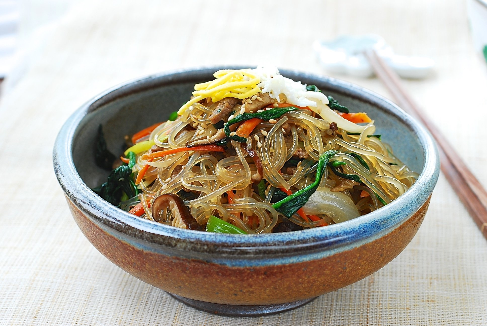
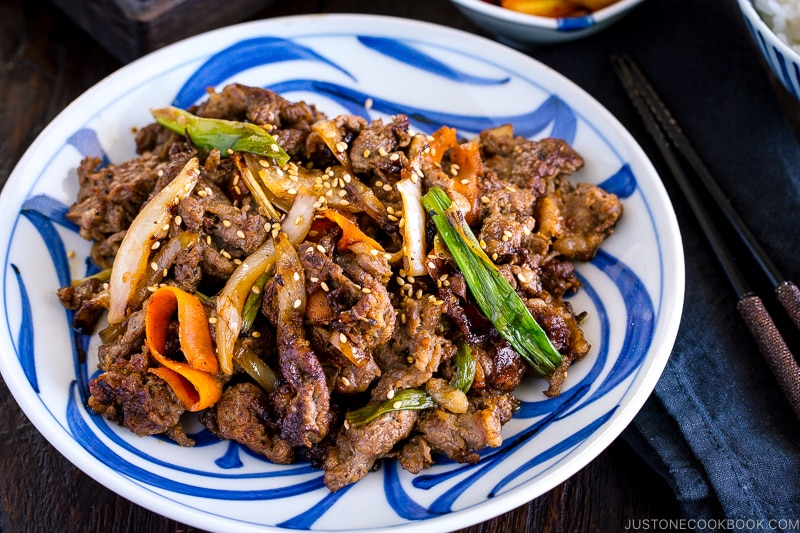

Definitivamente é algo que foge ao paladar do brasileiro, comidas orientais sempre são assim. Entretanto, estamos acostumados com a culinária japonesa, e até certo ponto com a chinesa. Mas quando falamos sobre comida coreana, é algo que a maioria das pessoas não conseguem imaginar como é.
A culinária coreana é bastante baseada em arroz, tofu, vegetais, carnes e macarrões. As refeições tradicionais são conhecidas como "pequenos pratos"(반찬, banchan) que acompanham o arroz de grãos curtos cozido a vapor. O kimchi é quase sempre servido em cada refeição. Ingredientes comumente utilizados incluem óleo de gergelim, doenjang (pasta de feijão fermentada), molho de soja, sal, alho, gengibre, flocos de pimenta, gochujang (pasta de pimentão vermelho fermentada) e repolho.
O autor deste post conheceu a culinária coreana através dos dramas coreanos, e desde então tem se empenhado em experimentar os diversos pratos que a compõe. Se olhar atentamente, perceberá que a cor vermelha predomina estes pratos, e se deve ao fato dos coreanos usarem uma quantidade (muito) acima da média em questão de pimenta, sendo a mais usada a gochugaru (고추가루). É necessário muito soju para aliviar a picância. O soju é a bebida nacional coreana, sendo uma das mais consumidas do mundo.
Bibimbap
Bibimbap é um prato popular da cozinha coreana. Literalmente, significa "arroz mesclado" ou "comida mesclada". Consiste basicamente em arroz branco, vegetais e carne misturados e preparados em tigela de pedra vulcânica.
 Um clássico coreano.
Um clássico coreano.
Japchaebap
Japchae é um prato saboroso e ligeiramente doce de macarrão de vidro frito e vegetais que é popular na culinária coreana. o macarrão tem esse nome por ser quase transparente, este sendo feito de batata doce.
 Japchaebap.Bulgogi
Bulgogi é um prato típico da cozinha coreana, feito de carne marinada grelhada em molho de soja, alho picado e semente de gergelim, e servido com verduras. É o que eu recomendo para quem está entrando no mundo da culinária coreana.
 Bulgogi típico coreano.